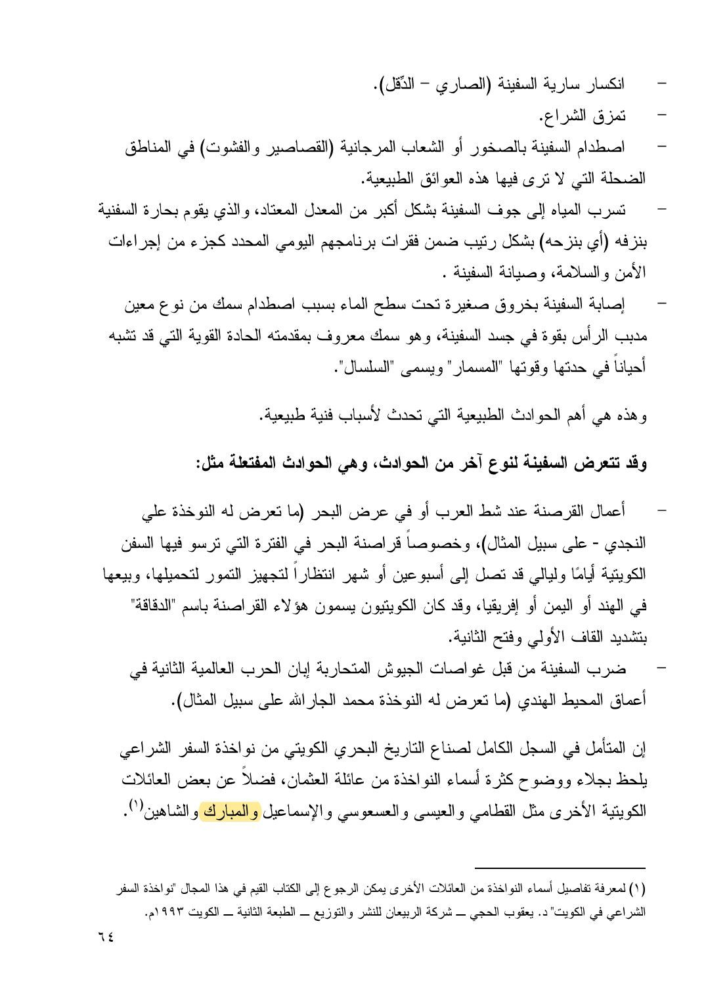

About 1915 to the 1950s (published book) · Pages from Al-Othman: Madrasat Al-Safar Al-Shira'i fil-Kuwait (Al-Othman: a school of sailing voyages in Kuwait)
Pages from Dr Abdulmohsen Al-Kharafi's history of the Al-Othman family that name the family
What it is
Page 64: Al-Qatami among the families with many sailing nakhudas. Page 99: the building of Naser Al-Najdi, later bought by Abdulwahab Al-Qatami. Page 154: Abdulwahab bin Eissa, then working in Basra, supplies dates for a voyage to India. Page 209: Abdulaziz Al-Qatami among the great nakhudas at the launch of the boom Tayseer. Page 252: Bader Abdulwahab, ship pilot at Shuwaikh Port. Page 260: Yousef Abdulwahab, nakhuda of the boom Al-Ghazal.
Why it matters
Another family's history that shows ours alongside them at sea, in trade and in port.
Who is meant
Noor confirmed that the Abdulwahab who bought the Najdi building is Abdulwahab Abdulaziz, Jassim's brother.
Page copies

Notes
Only the first pages are shown here. Family members who sign in can see all 7 pages.
Sources
Dr Abdulmohsen Abdullah Al-Kharafi, Al-Othman: Madrasat Al-Safar Al-Shira'i fil-Kuwait. Pages shared by the Al-Mubarak family archive, almubarak-kw.com.
How this text was made: Page copies of a published book.
Open in the interactive site